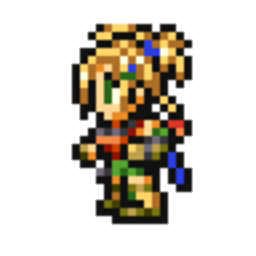

Al Bhed is a fictional language featured in the hit 2001 videogame Final Fantasy X. It works as a language system replacing certain letters with others, from the English dictionary. It shares the same syntax and grammar as English, and thus the input language is required to be English in order for this to work.
